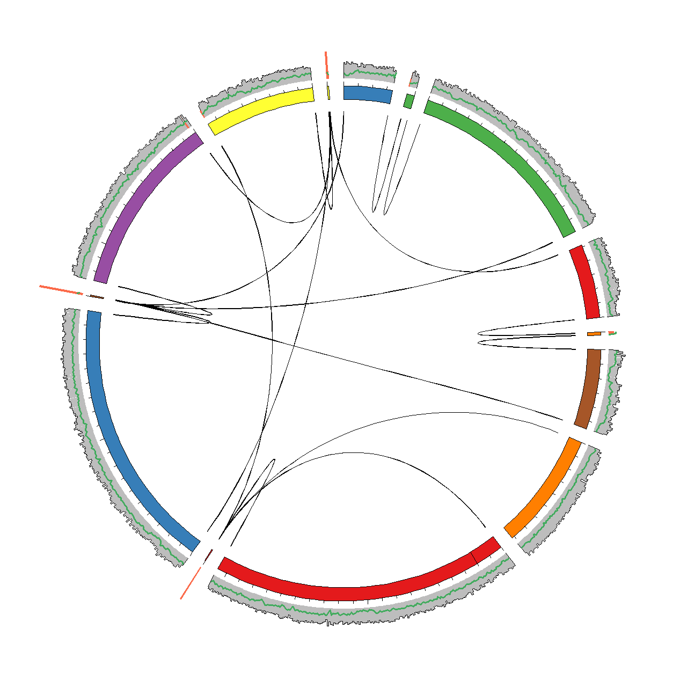

Under construction !
Finishing
The last part of the guide is the finishing step. The extracted genome is by now probably already great quality. However, to make it into a high-quality genome it is needed to dive into the genome at nucleotide resolution, while still keeping an overview of the full genome.
To facilitate this we have integrated all relevant data in the framework of Circos. Circos enables circular visualisations of any type of data, but is often used for genomic data. Circos have a steep learning curve, but also one of the best online guides we have seen so far (check it out). After trying out the scripts in this section you should be able to generate a plot as the one shown below for any genome assembly.

Generating data for visualisation in Circos
The script circosviz.pl generates all data needed for the Circos visualisation. The only needed input is a SAM file of the reads mapped to the assembly and a fasta file of the assembled scaffolds.
perl multi-metagenome/circosviz/circosviz.pl -i mapping.sam -f scaffolds.fa -e 500 -m 3000 -a 125 -b 1000 -p 1000
-i: A SAM file of the reads mapped to the scaffolds. The requirement to the read header is the same as in cytoscapeviz.pl (see PE tracking).
-f: A fasta file of the assembled scaffolds. This is used to calculate GC profiles and mark N’s.
-e: The maximum distance from the start or end of a scaffold for a read to be considered an end read.
-m: The minimum length for a scaffold to allow for end-end connections.
-a: The average read length of the reads mapped to the scaffolds.
-b: The bin size for coverage, GC calculations and PE mapping density calculations.
-p: The minumum distance between reads to be considered a split PE read. Only spilt PE reads are visualised.
-g: Adds FRCbam assembly metrics using the Feature.gff output of the program.
Output: Karyotype
The basic output file is circos.karyotype.txt, which contains the names and lengths of the scaffolds in the assembly. The scaffolds are arranged by decreasing length and assigned a color. This .karyotype. file is used by Circos as a backbone for the plot. Below is an example of the file provided in the example dataset (see circosviz/circosexample/data). Each scaffold is represented as a chromosome using the chr-tag and any gaps in the scaffolds are marked using the band-tag.
chr - scaffold1 scaffold1 0 206839 set1-7-qual-1
...
band scaffold1 band1 band1 19877 19957 black
set1-7-qual-1 refer to a specific color from the Brewer palettes which is integrated in Circos.
Output: Coverage and GC content
The circos.coverage.txt file contians the coverage of each scaffold in a given bin size (-b). One of the nice things by Circos is the simple syntax for adding new data to the plot. Here, a coverage of 396.1 is assigned to the first 1000 bp of scaffold1.
scaffold1 0 1000 396.1
The file circos.gc.txt contains the GC content of all scaffolds in a given bin size (-b) and have a similar structure as the .coverage. file.
Output: Paired-end links
A central feature of the assembly visulisation is the ability to track where all paired-end (PE) reads map in the assembly. The paired-end reads are classified into four groups.
The first group is good PE reads which are defined as having an insert size within a defined cutoff (-p). The second group is good end links. These are defined as PE reads where both reads map within a given distance (-e) of either the start or end of the scaffold. The good end links represent ends of scaffolds that might be manually scaffolded.
The third group is bad between links, where the PE reads map to different scaffolds, but at least one of the PE reads do not map within an end. The bad between links can indicate repeat integration in the genome or chimeric regions. Lastly there is the bad within group, which are PE reads that map within the same scaffold and have an insert size above the defined cutoff (-p).
Only the good end, bad between and bad within links are reported. The associated files are named circos.ends.txt, circos.dcontigs.txt and circos.scontigs.wl.txt respectively. The file structure for links in Circos is shown below. Each PE read is assigned a group, e.g. pe1 and the read mapping position is assigned.
pe1 scaffold1 100 101
pe1 scaffold2 206676 206677
pe2 scaffold7 11 12
pe2 scaffold11 100234 100235
Output: Link density
In most assemblies there will be millons of reads, which will result in a lot of false-positives. In order to determine if a region is problematic the density of reads in the different link groups is reported for a given bin size -b. These files are denoted with .count.. The link density files have the same structure as the coverage file. E.g. there is 173 good end links in the first 500 bp of scaffold1.
scaffold1 0 500 173
Output: FRCbam statistics
The file frx.tracks.txt contains FRCbam reference free validation statistics that can often be usefull to identify problematic regions in assemblies. In order to comply with Circos the different statistics have been given numbers (see later). E.g. 4 represents LOW_COV_PE which stands for low paired-end coverage.
scaffold1 3025 3300 4
Generating Circos figures
Explain what the Circos configuration file is.
circos -conf etc\denovoviz_1_clean.conf -noparanoid
Manipulating the Circos figures
Show how to add the different kinds of information: First all data no filtering at all.
Curating the assembly
Explain how to inspect and correct the assembly based on the Circos figures. Zoom etc.
Finishing is by far the most time-consuming step and often a reasonable draft genome is all that is needed. In this case use the Circos visual…
Tweaks and tricks
Extract the part of a SAM file that is associated with a given list of scaffolds.